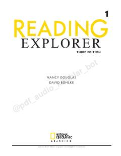

REIngliz tilini o'rganuvchilar uchun National Geographic materiallari asosida yaratilgan qiziqarli o'qish darsligi.
Ushbu darslik ingliz tilini o'rganuvchilar uchun mo'ljallangan bo'lib, National Geographic materiallari asosida dunyo bo'ylab qiziqarli mavzularni qamrab oladi. Kitob o'quvchilarning o'qish ko'nikmalarini rivojlantirish, lug'at boyligini oshirish va tanqidiy fikrlash qobiliyatini shakllantirishga qaratilgan.